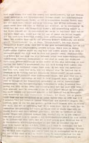

Een zwarte bladzijde uit de geschiedenis van de UB Leiden
Tentoonstelling in de Universiteitsbibliotheek te Leiden,
van 15
april tot 31 december 2003.
Samenstelling: Jos Damen
|
1. |
Rijksuniversiteit Leiden 1940-1945 | |
|
2. |
Universiteitsbibliotheek Leiden 1940-1945 | |
|
3. |
Elsa Molhuysen-Oppenheim (Groningen 1885 - Leiden 1941) | |
|
4. |
Caroline van Loen (Amsterdam 1886 - Auschwitz 1944) |
RIJKSUNIVERSITEIT LEIDEN 1940-1945
De Leidse universiteit heeft haar ontstaan in 1575 te danken aan het
verzet tegen de Spanjaarden. Noblesse oblige: het is dan ook niet
verwonderlijk dat op 27 november 1940, nog in het eerste jaar van de
Duitse bezetting van Nederland, de Leidse universiteit door een Duitse
strafmaatregel gesloten werd. Dat ging als volgt.
Op 21 november 1940 kregen Nederlandse universiteiten ten departemente te
horen dat al het joodse universitaire personeel ontslagen moest worden.
Een dag later vergaderde de Leidse rechtenfaculteit over de kwestie en nam
een moedig besluit. De decaan, prof. mr. R.P. Cleveringa, hield
dinsdagmorgen 26 november 1940 een indrukwekkende toespraak waarin hij de
ontslagmaatregel veroordeelde en zijn joodse collega prof. mr. E.M.
Meijers verdedigde. Een dag later sloten de Duitsers de Leidse
universiteit en zetten Cleveringa gevangen. Wie de roman Soldaat van
Oranje van Erik Hazelhoff Roelfzema leest, of de gelijknamige film van
de oud-Leidse wiskundestudent Paul Verhoeven ziet, herkent de scene bij
het Leidse Academiegebouw ongetwijfeld.
| Rede uitgesproken op 26
november 1940, namens de juridische faculteit als decaan gehouden
naar aanleiding van het ontslag van prof. mr. E.M. Meijers als
hoogleraar aan de Rijksuniversiteit Leiden / R.P. Cleveringa.
Leiden, 1940. (UBL FOLIO 16 D 4) |
||
|  | ||
 |
Soldaat van Oranje : '40-'45 / E. Hazelhoff-Roelfzema ; voorw. van Prins Bernhard. 's Gravenhage, 1971. (UBL 1250 D 3) In benopte, ongeïllustreerde vorm eerder verschenen o.d.t.: Het hol van de ratelslang | |
| De Leidse Universiteit tegen nationaal-socialisme en bezetting / P.J. Idenburg. Leiden, 1982. (UBL 8758 A 2) Genomen uit: De Leidse Universiteit, 1928-1946 / P.J. Idenburg | ||
| volgende pagina | |